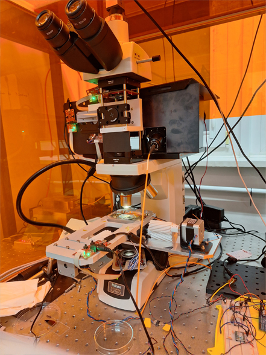
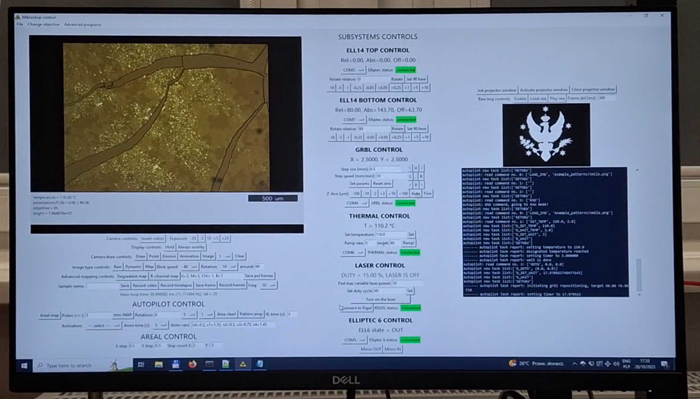

|  |
Microscope description
This sophisticated microscope system integrates cutting-edge features, including advanced light
polarization capabilities with two independently rotatable linear polarizers driven by precise
piezo motors. It also incorporates a laser projection system capable of projecting arbitrary
light patterns onto the sample surface, a heating stage, and a motorized XY stage. Originally
designed and constructed by us for studying thin-film liquid-crystalline samples, this versatile
system facilitates precise and controllable laser illumination tasks for a wide range of sample
types.
|
|  |
Software showcaseThis equipment demands a sophisticated control program, which i created using Python with the aid tkinter library. This program empowers users with complete command over the myriad functions of the microscope, enabling the seamless execution of automated tasks involving multiple steps, even for those without programming expertise. The accompanying image showcases the graphical user interface (GUI) of the program, providing users with an intuitive visual interface, while a video captures the entire system executing a complex automated task. The source code will be available when the patent acquisition process will be finished. |